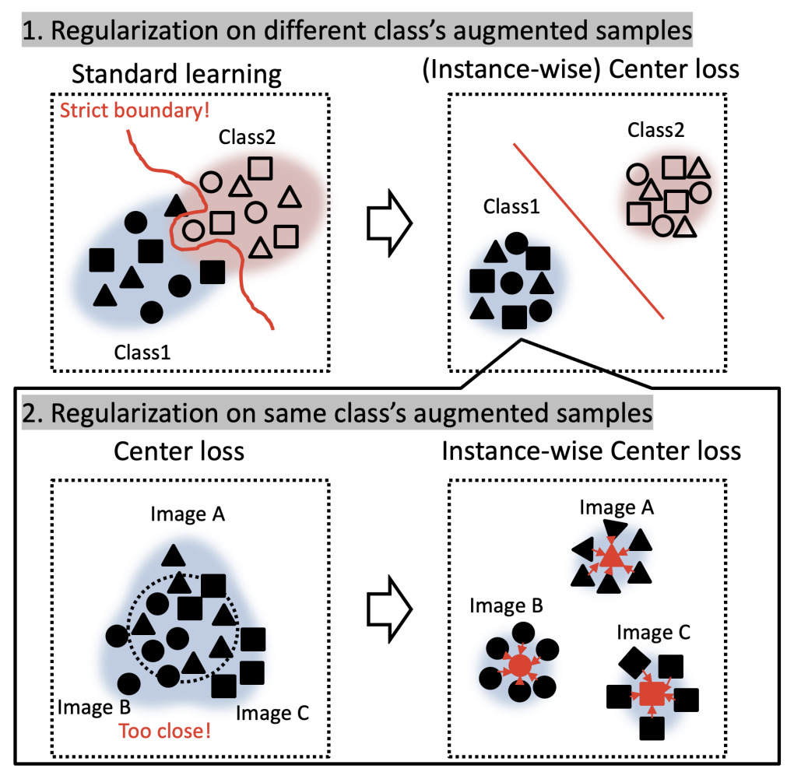

Instance-wise Center Loss for Efficient Training of Deep Convolutional Neural Networks
2022 IEEE 11th Global Conference on Consumer Electronics (GCCE), pp. 692–696 · doi:10.1109/GCCE56475.2022.10014037

Abstract
Intermediate feature regularization is a critical technique in machine learning for computer vision applications. We propose an instance-wise center loss regularization with augmented images, enforcing logit consistency among augmentations of the same base image. Experiments show improvements over existing regularization techniques.
How it works
- Several views per image. Every training image xi in a mini-batch is augmented N times (N = 2 by default), and the network hθ produces a logit for each view.
- Instance-wise centre. The centre of image i is the mean logit of its views, c̃i = (1/N) Σn hθ(gηn(xi)). It is computed before the softmax and treated as a constant (stop-gradient), which stabilises training.
- Loss. LIC = 1/(|B|N) Σi Σn ‖hθ(gηn(xi)) − StopGrad(c̃i)‖22 pulls every view towards its own image's centre. It is combined with cross-entropy over all views as L = (1 − λIC) LCE + λIC LIC, with λIC = 0.7 for ResNet-18 and 0.5 for ResNeXt-29 and WideResNet-28-10.
- Why it helps. Views of the same image land close together, so the decision boundary is easy to draw. Views of different images of the same class are not forced together, unlike with center loss, so the class does not collapse and overfitting is reduced.
Main results
Top-1 accuracy (%) with two augmented views per image, without regularisation (None) and with the instance-wise center loss (Ours). The comparison covers three networks, three augmentation policies and three datasets; CUB-200-2011 is resized to 32×32 like the CIFAR images. Center loss, contrastive center loss and triplet loss were also compared in the same table, and the instance-wise center loss is the best of all five in every one of the 27 settings.
| Model | Augmentation | CIFAR-10 None | CIFAR-10 Ours | CIFAR-100 None | CIFAR-100 Ours | CUB-200 None | CUB-200 Ours |
|---|---|---|---|---|---|---|---|
| ResNet-18 | Flip & crop | 94.31 | 95.23 | 74.87 | 77.46 | 28.79 | 32.19 |
| Cutout | 94.37 | 95.60 | 76.00 | 77.98 | 31.17 | 37.32 | |
| AutoAugment | 95.46 | 95.90 | 77.19 | 79.03 | 42.31 | 47.43 | |
| ResNeXt-29 (8×32d) | Flip & crop | 95.04 | 96.30 | 80.26 | 80.51 | 30.74 | 32.89 |
| Cutout | 96.11 | 96.93 | 80.47 | 81.76 | 32.46 | 35.30 | |
| AutoAugment | 96.42 | 96.95 | 80.59 | 82.64 | 37.31 | 48.84 | |
| WideResNet-28-10 | Flip & crop | 96.26 | 96.31 | 81.28 | 81.56 | 34.08 | 39.04 |
| Cutout | 96.77 | 96.88 | 82.42 | 82.68 | 38.51 | 41.39 | |
| AutoAugment | 96.67 | 97.20 | 82.99 | 83.37 | 48.98 | 52.92 |
Mean over three runs; values from Table I of the paper, which also lists the standard deviations and the three other regularisers. SGD for 200 epochs, learning rate 0.1 divided by 10 at epochs 60, 120 and 180, weight decay 5·10−4, batch 256.
Against AugMix's JS-divergence consistency (ResNet-18, three views, CIFAR-10 / CIFAR-100): instance-wise center loss is best with every augmentation policy (Table II).
| Augmentation | Regularisation | CIFAR-10 | CIFAR-100 |
|---|---|---|---|
| Flip & crop | None | 94.35 | 75.79 |
| JS-divergence | 94.23 | 73.85 | |
| Instance-wise center loss | 95.15 | 78.00 | |
| Cutout | None | 94.85 | 75.99 |
| JS-divergence | 94.51 | 74.62 | |
| Instance-wise center loss | 95.75 | 77.97 | |
| AutoAugment | None | 95.76 | 77.36 |
| JS-divergence | 95.28 | 79.05 | |
| Instance-wise center loss | 95.96 | 79.08 | |
| AugMix | None | 94.90 | 75.62 |
| JS-divergence | 94.74 | 76.03 | |
| Instance-wise center loss | 95.67 | 77.43 |
Values from Table II of the paper (mean over three runs).
Small training sets. With only 100, 500 or 1,000 CIFAR-10 training images (ResNet-18, AutoAugment), the gains over no regularisation are the largest in the paper: +7.6, +21.3 and +18.7 points (Table III).
| Regularisation | 100 images | 500 images | 1,000 images |
|---|---|---|---|
| None | 23.33 | 35.15 | 49.02 |
| Center loss | 17.17 | 25.75 | 33.98 |
| Contrastive center loss | 24.64 | 38.37 | 55.31 |
| Triplet loss | 26.31 | 39.51 | 50.42 |
| Instance-wise center loss | 30.91 | 56.46 | 67.67 |
Values from Table III of the paper (mean over three runs).
Distance used in the loss (ResNet-18, flip & crop, λIC = 0.1): every distance helps, and the squared L2 distance is best, so it is the default (Table IV).
| Distance | None | L1 | Huber | KL | L2 |
|---|---|---|---|---|---|
| Accuracy (%) | 76.26 | 76.79 | 77.26 | 77.51 | 77.83 |
Values from Table IV of the paper.
Use it
The loss is a drop-in PyTorch module in the paper repository.
pip install git+https://github.com/MADONOKOUKI/gcce2022_instancewise_center_loss
import torch
from torchvision import transforms as T
import iwcl
from iwcl.models import build_model
model = build_model("resnet18", num_classes=100) # returns (logits, features)
criterion = iwcl.InstanceWiseCenterLoss(alpha=0.7) # alpha = λ_IC (0.7 for ResNet-18 in the paper)
augment = T.Compose([T.RandomCrop(32, padding=4), T.RandomHorizontalFlip()])
images, labels = torch.rand(8, 3, 32, 32), torch.randint(0, 100, (8,))
views = iwcl.make_views(images, augment, num_views=2) # (N, B, 3, 32, 32)
logits = torch.stack([model(v)[0] for v in views]) # (N, B, 100)
loss = criterion(logits, labels) # (1 − λ) CE + λ L_IC
loss.backward()
python train.py --dataset cifar100 --model resnet18 --augmentation cutout --method proposed bash scripts/reproduce_table1.sh # all of Table I (three seeds per setting)
Run the last two commands from a clone of the repository; --method also selects the compared regularisers (center_loss, contrastive_center_loss, triplet_loss, jsd).
Citation
@inproceedings{madono2022instance,
title = {Instance-wise Center Loss for Efficient Training of Deep Convolutional Neural Networks},
author = {Madono, Koki and Tanaka, Masayuki and Onishi, Masaki},
booktitle = {2022 IEEE 11th Global Conference on Consumer Electronics (GCCE)},
pages = {692--696},
year = {2022},
doi = {10.1109/GCCE56475.2022.10014037}
}
← Back to the publication list